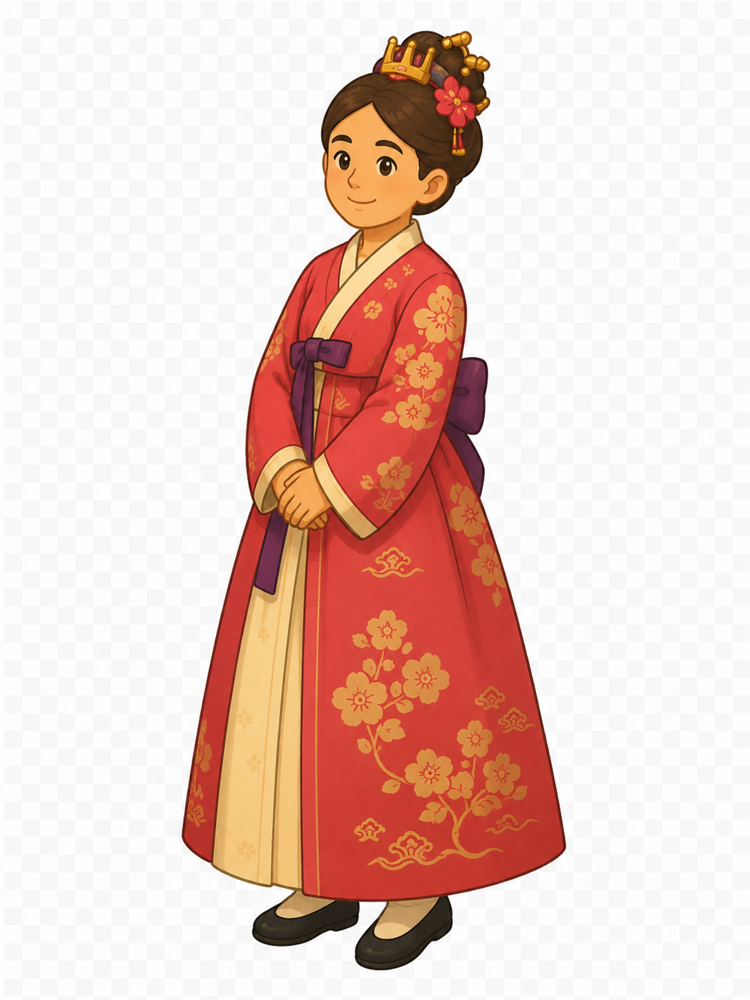
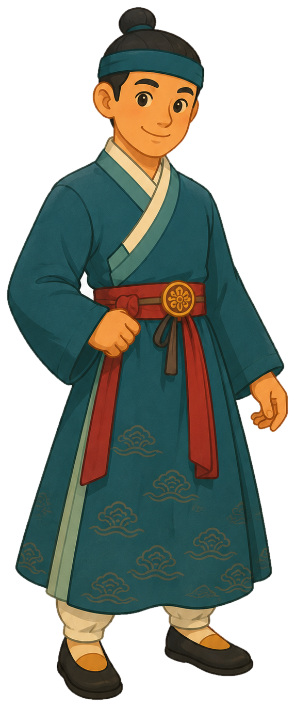

아주 먼 옛날,
동해 바닷가 마을에
연오랑과 세오녀
부부가 살았어요.
XROO 방탈출

👸
🧑🌾— 사라진 빛을 찾아 —
옛날 동해 바닷가의 이야기가 시작돼요
아주 먼 옛날,
동해 바닷가 마을에
연오랑과 세오녀
부부가 살았어요.
어느 날 연오랑이 바다에서
해초를 따고 있는데,
커다란 바위가 둥실—
그를 바다 건너 일본으로
데려가 버렸어요.
사람들은 그를 왕으로 모셨답니다.
남편이 돌아오지 않자
세오녀가 찾아 나섰어요.
바닷가 바위 위 신발을 보고
그 위에 오르니,
바위가 세오녀도 실어
일본으로 데려갔어요.
둘은 다시 만나 행복했답니다.
그런데 이게 웬일!
두 사람이 떠난 신라에서는
해와 달이 빛을 잃고
온 세상이 캄캄해졌어요. 🌑
하늘을 살피던 일관이 아뢰었어요.
“해와 달의 정기가
일본으로 건너갔습니다!”
왕은 두 사람을 찾아
사신을 보냈어요.
연오랑이 말했어요.
“나는 돌아갈 수 없지만…
세오녀가 곱게 짠
비단을 가져가세요.
이것으로 하늘에 제사를 지내면
빛이 돌아올 거예요.”
비단을 펼쳐 하늘에
정성껏 제사를 지내자…
해와 달이 다시 빛났어요! ☀️🌙
그 귀한 비단은 창고에 모셔
나라의 보물이 되었답니다.
그리고 오늘…
그 빛이 또다시 사라졌어요!
이제 여러분이 나설 차례예요.
다섯 개의 수수께끼를 풀고
사라진 빛을 되찾아 주세요. 🔦